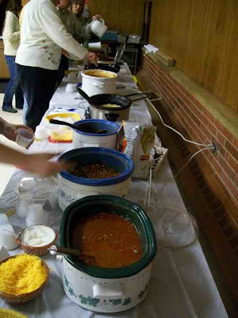
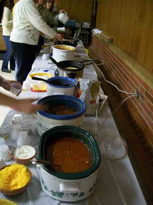

You may think soap an unusual topic for a post, especially soap as ugly as that pictured below.
However, consider that this soap was a gift not purchased in a store, but handmade by a woman who was once my neighbor, Irene Firzlaff. Irene died in 2001, and for several years had before that had lived in a retirement home in DeMotte. She was a wonderful neighbor who had had an interesting life, and she was the only person to ever give me a bar of handmade soap. I did not know what to do with it, so I let it sit in my porch for many years where it dried out and began to crack. Recently I decided I should either throw it away or use it. Because it was from Irene, I decided to use it.
One of Irene's passions was her bird feeding station, and if she were still here, I would be able to get interesting bird pictures for this blog. The feeding station attracted the squirrels, and Irene did not like the squirrels, so she live-trapped them and released them at St. Joes. Despite removing dozens of squirrels from the neighborhood, I never noticed a reduction in squirrel density. Sometimes she caught something other than a squirrel--a cat or an opossum or a raccoon. I do not recall if she ever caught a skunk, but she did once catch a badger, an animal I have never seen in Rensselaer.
Irene had been a schoolteacher and was always interested in our kids as they came up through the grades. Her attention was partially repaid when the kids got older. My oldest son took her for a plane ride after he got his pilot's license. (He no longer flies.) Somewhere we may have some pictures of that, but for now I have only a picture of her in my daughter's truck that she had just purchased to take a job at Death Valley National Park. The back of the picture says Irene was 93 when this picture was taken in the fall of 1996.

This blog reports events and interesting tidbits from Rensselaer, Indiana and the surrounding area.
Saturday, January 31, 2009
Friday, January 30, 2009
Field Trip
On Wednesday a group of Saint Joseph's College business students attended another business networking event. This time it was off to the big city of Chicago.
Several faculty members spend a lot of time making the preparations for about twenty students to go to Chicago (or Indianapolis) for networking, socializing, practicing their people skills, and generally learning how to behave in an informal business setting. Last year the Chicago event was at the Board of Trade Center. Saint Joseph's College has an alumnus who was able to get the college access to that site, which was quite exciting because visitors are no longer able to see the trading floor of the exchange.
At the time, the Board of Trade had recently merged with the Chicago Mercantile Exchange, and construction was underway on a new trading floor. Some trading was taking place there already, but more would be coming. The Chicago exchange is among the last of the open-outcry markets. Most trading of this sort is now done electronically. I am pretty sure that what happens on these floors sets the prices that Rensselaer farmers get when they sell their grain here.
The location was exciting, but the space itself was not really very good for what we were doing. We were mingling in a corridor.
The food, though, looked appetizing. I do not often get to sample delicacies like these.
This year we returned to a location that we had used in the past, the Union League Club. It is a very old club, founded well over a century ago, and when I walk into the building, it tells me, "You do not have enough wealth or social status to be here." I usually whisper back, "Calm down. I am just visiting and will be on my way very soon." The Union Club has an impressive collection of art, which is displayed everywhere.
Our reception was in a small room. Down the hall was a large dining room with a couple dozen large pictures. Since no one was there, and we were still waiting for people to arrive, I checked them out. A lot of them were from the late 19th and early 20th centuries.
The staircase to the ground floor had the pictures below. I am not sure how many floors the Union Club has (update--someone told me it was nine), but I am pretty sure paintings decorated the stairs all the way to the top.The room was better suited for talking to people than the Board of Trade space. The students are encouraged to mingle and meet people, and find out what the "real" world is like.
One of the students who sometimes reads this blog told me that I should take a picture of the plates. I thought that the holes were for holding the plate, sort of like the way an artist holds a palette, but the server corrected me and said that was for a wine glass. Someone showed me how that worked, but it might take some practice for me to get it right.
It is always fun to see the alumni. Sometimes they still remember me and sometimes they do not. They often look a lot different than what they looked like when they were students.
Below are two current students and one one of my all-time favorite students from the past. She had gone to California and gotten a job at New Line Cinema. New Line was recently merged with Warner, and then Warner fired most of the New Line people. So she had moved back to the Midwest, recently gotten married, and will soon be in an upcoming play called Police Academy: Insurgency Emergency. (I forgot to tell one of these women that she recently had a street named after her.)
After two hours, it was time to hit the road. I was very happy that I did not have to drive or do much of anything except come along for the event. We took the Skyway home. I am happy to live without toll booths.
Chicago is a fun place to visit, but....
Several faculty members spend a lot of time making the preparations for about twenty students to go to Chicago (or Indianapolis) for networking, socializing, practicing their people skills, and generally learning how to behave in an informal business setting. Last year the Chicago event was at the Board of Trade Center. Saint Joseph's College has an alumnus who was able to get the college access to that site, which was quite exciting because visitors are no longer able to see the trading floor of the exchange.
At the time, the Board of Trade had recently merged with the Chicago Mercantile Exchange, and construction was underway on a new trading floor. Some trading was taking place there already, but more would be coming. The Chicago exchange is among the last of the open-outcry markets. Most trading of this sort is now done electronically. I am pretty sure that what happens on these floors sets the prices that Rensselaer farmers get when they sell their grain here.
The location was exciting, but the space itself was not really very good for what we were doing. We were mingling in a corridor.
The food, though, looked appetizing. I do not often get to sample delicacies like these.
This year we returned to a location that we had used in the past, the Union League Club. It is a very old club, founded well over a century ago, and when I walk into the building, it tells me, "You do not have enough wealth or social status to be here." I usually whisper back, "Calm down. I am just visiting and will be on my way very soon." The Union Club has an impressive collection of art, which is displayed everywhere.
Our reception was in a small room. Down the hall was a large dining room with a couple dozen large pictures. Since no one was there, and we were still waiting for people to arrive, I checked them out. A lot of them were from the late 19th and early 20th centuries.
The staircase to the ground floor had the pictures below. I am not sure how many floors the Union Club has (update--someone told me it was nine), but I am pretty sure paintings decorated the stairs all the way to the top.The room was better suited for talking to people than the Board of Trade space. The students are encouraged to mingle and meet people, and find out what the "real" world is like.
One of the students who sometimes reads this blog told me that I should take a picture of the plates. I thought that the holes were for holding the plate, sort of like the way an artist holds a palette, but the server corrected me and said that was for a wine glass. Someone showed me how that worked, but it might take some practice for me to get it right.
It is always fun to see the alumni. Sometimes they still remember me and sometimes they do not. They often look a lot different than what they looked like when they were students.
Below are two current students and one one of my all-time favorite students from the past. She had gone to California and gotten a job at New Line Cinema. New Line was recently merged with Warner, and then Warner fired most of the New Line people. So she had moved back to the Midwest, recently gotten married, and will soon be in an upcoming play called Police Academy: Insurgency Emergency. (I forgot to tell one of these women that she recently had a street named after her.)
After two hours, it was time to hit the road. I was very happy that I did not have to drive or do much of anything except come along for the event. We took the Skyway home. I am happy to live without toll booths.
Chicago is a fun place to visit, but....
Thursday, January 29, 2009
Shopping at Irene's Consignment Shop
Looking around Rensselaer's downtown, I was surprised at how few retail establishments are left. Consider the 200 block of West Washington. On the northwest side there is Jack's Uptown Service, a boarded up building that is occupied, the Uptown Girls Styling Salon, Sunchasers Tanning Salon, Tucker Real Estate, L&J Antiques and Things, an empty building, and the Lafayette Bank and Trust. Only one of those is a retail store, the antique store. If we continue down the street to the 100 block, we have an empty lot, Jasper County Microfilm Department, the Riley Law Office, an empty office, the CI Insurance in a beautifully restored bank building, Irene's Consignment Shop, an empty store that used to be Harvey Copy Center but which has now moved to the consignment shop, the Clauss Bakery and Cafe, Clean-As-A-Whistle, Jasper County Land Surveying, the Executor, the Dreamers Solution Music, the Sister Act Salon, and an empty store. Only Irene's Consignment Shop and the Dreamers Solution Music are really retail shops.
I had not noticed that Harvey's Copy Center was moving. It had originally started in the building at Harrison and Cullen that most recently was Whippersnap Studio. Tom Harvey had moved about four years ago when he bought the old OddFellows Building and also the building next to it, which houses Irene's Consignment Shop. The Oddfellows are no longer active in Rensselaer, and whatever was left here has consolidated with the Monticello branch. The Oddfellows were once a large and active fraternal organization, but have been shrinking for many years.
However, there is some good news here. The reason that Harvey's has moved is because the Clauss Bakery wants to expand, and they will move into the space that was occupied by Harvey's Copy Center.
Here is what these two buildings looked like when they were new. The space that is now the consignment store was then Traub and Selig, a dress store. Next door was Columbia Shoe Store, and next to that was E. D. Rhoads & Son Hardware. (I might be wrong on the initials. My copy of the picture has more detail than this one, but is still a bit unclear.) Note the nice turret on the top of the building. The Oddfellow building was built in 1895 in a Romanesque style, and the building to its left in 1898 in a neoclassical style. I bet no one who is reading this remembers any of those stores.
There have been lots of businesses on the second floors of these buildings: attorneys, dentists, insurance and real estate agents, and at one time the local license branch. For many years the Muday Sewing Center was in the Copy Center space.
Among the stores that have been in the consignment shop space are Montgomery Ward, Read More, and the Lewis and Young Hardware store. I cannot say I remember any of them, but here is a picture of the building when it was the Lewis and Young Hardware store.
Enough of the past. Here is the building today. The Jasper County Interim Report says,
Let us go in and see what is there.
This ATV was a surprise. It had a price of $1000. I expected the store to be just clothes, and it is not. As the picture below shows, it also has books, CDs, and VHS tapes.
In the case by the cash register was an assortment of jewelry.
However, most of the merchandise was clothing, though you might also be able to see some shoes and purses on the wall. The store has no inventory; everything there is on consignment. Anyone who has things that they would like to sell, and does not want to bother with a yard sale or attempt to sell it on eBay, can bring it in. Obviously, the store takes part of the proceeds if it sells. I did not ask about the details of how this works. If you are interested, contact them and I am sure that they will be happy to explain it.
On the day I was there, Irene was not feeling well, but Tom Harvey was a wonderful host and was willing to share a lot of information with me, and brought out some old pictures, some of which I photographed and are shown above. For many years Irene worked at Saint Joseph's College in the copy center, and everyone out there knew her.
Here is a different view from the back of the store, showing some glassware and a few other non-clothing items as well as a lot of clothes.
I did not see any furniture items, except for the chairs below, which I do not think were for sale, but for people to come in and visit. The view from the front window was wonderful--it is of the front of the Court House.
If you are looking for clothes or just about anything, stop in and see what they have. It is a fun place to visit.
I had not noticed that Harvey's Copy Center was moving. It had originally started in the building at Harrison and Cullen that most recently was Whippersnap Studio. Tom Harvey had moved about four years ago when he bought the old OddFellows Building and also the building next to it, which houses Irene's Consignment Shop. The Oddfellows are no longer active in Rensselaer, and whatever was left here has consolidated with the Monticello branch. The Oddfellows were once a large and active fraternal organization, but have been shrinking for many years.
However, there is some good news here. The reason that Harvey's has moved is because the Clauss Bakery wants to expand, and they will move into the space that was occupied by Harvey's Copy Center.
Here is what these two buildings looked like when they were new. The space that is now the consignment store was then Traub and Selig, a dress store. Next door was Columbia Shoe Store, and next to that was E. D. Rhoads & Son Hardware. (I might be wrong on the initials. My copy of the picture has more detail than this one, but is still a bit unclear.) Note the nice turret on the top of the building. The Oddfellow building was built in 1895 in a Romanesque style, and the building to its left in 1898 in a neoclassical style. I bet no one who is reading this remembers any of those stores.
There have been lots of businesses on the second floors of these buildings: attorneys, dentists, insurance and real estate agents, and at one time the local license branch. For many years the Muday Sewing Center was in the Copy Center space.
Among the stores that have been in the consignment shop space are Montgomery Ward, Read More, and the Lewis and Young Hardware store. I cannot say I remember any of them, but here is a picture of the building when it was the Lewis and Young Hardware store.
Enough of the past. Here is the building today. The Jasper County Interim Report says,
The cornice of this Neoclassical commercial building is adorned with dentils and a balustrade. The facade features quoins and 2-story pilasters.I will let you figure out what that means. It must be good, right? Notice that the building to the left is not the same as the building to the left in the old picture.
Let us go in and see what is there.
This ATV was a surprise. It had a price of $1000. I expected the store to be just clothes, and it is not. As the picture below shows, it also has books, CDs, and VHS tapes.
In the case by the cash register was an assortment of jewelry.
However, most of the merchandise was clothing, though you might also be able to see some shoes and purses on the wall. The store has no inventory; everything there is on consignment. Anyone who has things that they would like to sell, and does not want to bother with a yard sale or attempt to sell it on eBay, can bring it in. Obviously, the store takes part of the proceeds if it sells. I did not ask about the details of how this works. If you are interested, contact them and I am sure that they will be happy to explain it.
On the day I was there, Irene was not feeling well, but Tom Harvey was a wonderful host and was willing to share a lot of information with me, and brought out some old pictures, some of which I photographed and are shown above. For many years Irene worked at Saint Joseph's College in the copy center, and everyone out there knew her.
Here is a different view from the back of the store, showing some glassware and a few other non-clothing items as well as a lot of clothes.
I did not see any furniture items, except for the chairs below, which I do not think were for sale, but for people to come in and visit. The view from the front window was wonderful--it is of the front of the Court House.
If you are looking for clothes or just about anything, stop in and see what they have. It is a fun place to visit.
Wednesday, January 28, 2009
Goodbye National City, Hello PNC
I got a letter in the mail recently that began
We're writing with some exciting news.
National city Bank is now part of The PNC Fianancial Services Group, one of the leading financial services companies in the nation.I love the spin. The actual story was not so happy. When the Treasury was injecting capital into the nation's banks by buying preferred stock, it apparently did not think National City was worth trying to save, and instead encouraged its takeover. A Bloomberg report notes,
National City, which PNC acquired on Dec. 31, was among the top 10 subprime loan originators in 2006 and made ill-timed acquisitions in Florida at the height of the housing boom, buying Fidelity Bankshares for $1 billion and Harbor Florida Bancshares for $1.1 billion in 2006 deals. The lender was ultimately forced to sell itself after racking up $4.4 billion in losses its last five quarters as an independent bank.The stock of Fifth Third Bank has fallen from about $40 per share to about $3 per share in the last 18 months. I wonder if it will be the next name change in Rensselaer banking.
Plaques: Benjamin Harris
If you cross the railroad track by the Amtrak station and walk just a bit north, you will find the plaque below that reads:
If it were not for the plaque above, I probably would not even know that there was such a thing as Harris Homes. They stay out of the news. I tried to find something about Benjamin Harris and could not. I did find his tombstone in Weston Cemetery.
On the back side of the marker (or maybe it is the front--how can you tell?) it says, "Founder of the widow and orphans home Rensslear Ind." His claim to fame apparently was not what he did while he was alive, but what he did after death, the Benjamin Harris Home, which is a better claim to fame than most of us will have.
 From several people I heard that originally the Harris Home was meant for war widows. I am not sure which war it would have been, because the U.S. did not enter WWI until 1917, the year after his death. How many widows were there from the Spanish American War? Maybe widows of Civil War veterans were the target audience--there might have been quite a few at this time since many would have been in the 60-70 age group just before Harris died.
From several people I heard that originally the Harris Home was meant for war widows. I am not sure which war it would have been, because the U.S. did not enter WWI until 1917, the year after his death. How many widows were there from the Spanish American War? Maybe widows of Civil War veterans were the target audience--there might have been quite a few at this time since many would have been in the 60-70 age group just before Harris died.
Times changed, and there were not enough war widows, so the criteria for admission changed. There is a waiting list to get in, and there is careful screening of those who apply. When the children grow up and leave, the woman also has to leave. Also, the 14 or so housing units that are there now appear to be less than sixty years old. I wonder what the original structure was.
Someone who lives in the Harris Homes told me that there are five people on the board of directors, and some of the revenue that supports the homes comes from farm land west of Rensselaer. I found a couple bits of info on the Internet in lists of Rensselaer charities. The Harris Homes seems to be in very good financial shape. Whoever has been administering this almost-century-old eleemosynary institution has done a much better job than Bernie Madoff did with the funds under his care.
In memory of Bejamin Harris 1838-1916 whose will founded and provided for the perpetuation of the Benjamin Harris Home for widows and orphans.
If it were not for the plaque above, I probably would not even know that there was such a thing as Harris Homes. They stay out of the news. I tried to find something about Benjamin Harris and could not. I did find his tombstone in Weston Cemetery.
On the back side of the marker (or maybe it is the front--how can you tell?) it says, "Founder of the widow and orphans home Rensslear Ind." His claim to fame apparently was not what he did while he was alive, but what he did after death, the Benjamin Harris Home, which is a better claim to fame than most of us will have.
From several people I heard that originally the Harris Home was meant for war widows. I am not sure which war it would have been, because the U.S. did not enter WWI until 1917, the year after his death. How many widows were there from the Spanish American War? Maybe widows of Civil War veterans were the target audience--there might have been quite a few at this time since many would have been in the 60-70 age group just before Harris died.Times changed, and there were not enough war widows, so the criteria for admission changed. There is a waiting list to get in, and there is careful screening of those who apply. When the children grow up and leave, the woman also has to leave. Also, the 14 or so housing units that are there now appear to be less than sixty years old. I wonder what the original structure was.
Someone who lives in the Harris Homes told me that there are five people on the board of directors, and some of the revenue that supports the homes comes from farm land west of Rensselaer. I found a couple bits of info on the Internet in lists of Rensselaer charities. The Harris Homes seems to be in very good financial shape. Whoever has been administering this almost-century-old eleemosynary institution has done a much better job than Bernie Madoff did with the funds under his care.
Tuesday, January 27, 2009
Well see here
For several months there has been activity in a field north of Wood Road. Yesterday I saw two workers there so I asked whether they were working on a new city water well. The gentleman's response was, "I think so."
A call to the city water department was more helpful. The city has purchased two acres of land and drilled a well to 340 feet that produces water. I wondered why the city needed a new well since it had added a well to the system last summer and it had two old wells, on Bunkum Road and next to Iroquois Park. Because one of the old wells has a problem with bacteria and the other has chemical contamination, neither is currently in use. Hence, the city is now drawing all its water from the well on Matheson.
If we have construction this summer running a water main down Matheson to connect to the water main coming from the well there, you will read about it and see it here.
A call to the city water department was more helpful. The city has purchased two acres of land and drilled a well to 340 feet that produces water. I wondered why the city needed a new well since it had added a well to the system last summer and it had two old wells, on Bunkum Road and next to Iroquois Park. Because one of the old wells has a problem with bacteria and the other has chemical contamination, neither is currently in use. Hence, the city is now drawing all its water from the well on Matheson.
If we have construction this summer running a water main down Matheson to connect to the water main coming from the well there, you will read about it and see it here.
Monday, January 26, 2009
Shopping at Sears
When I came to Rensselaer, Sears was one of the major retailers, occupying the space that has become the Town Mall on the corner of Kellner and Van Rensselaer. Now Sears offers a more limited range of goods in Rensselaer, specializing in appliances and tools in their College Square store. You can also find Sears coupons available for their products.
Entering, we see snow blowers and small tractors. In the summer the snow blowers will be replaced by lawn mowers. Sears competes with several other stores in this market, including Wal-Mart and Walters.As you move to the back of the store, you see a lot of washing machines, stoves, and refrigerators. Fases is probably the only other local store that has as many of these appliances as Sears does.
Sears price matches, and on the day I was there, they had signs up saying they would not match Circuit City prices because Circuit City was liquidating their inventory in the process of going out of business. So if you need a new appliance, find something you like at Sears, then try to find the same model at a lower price somewhere else, and you will get the lower price.
I noticed that they had a lot of stoves that used natural gas and some electrics that had the new, smooth tops> I asked why there were no electric stoves that had the old coils. One of the clerks said that you could order one of the old coil models if you wanted, but they did not have any in stock. She also said that the latest thing was induction cooking, It also has a smooth stove top, and with it only the pot is heated, not the stove top. It sounded rather interesting, so I checked it on the Internet. Maybe our next stove will be induction. If it is, all the non-magnetic pots will have to go because induction cooking only works with pots that attract a magnet.
One of Sear's specialties is tools. They spent a lot of time making Craftsman into a brand recognized for quality. Does it still have that reputation?
At the back of the store they had some exercise machines and televisions. (Do those two things go together? If you watch too much TV, you will need to exercise? Or if you have an exercise machine, you need a TV or you will die of boredom?)
Sears used to be where American shopped, but they got out maneuvered by Wal-mart. In the U.S., no company has managed to hang onto the top position for very long. Before Sears, Montgomery Ward was number one, and they do not really exist anymore. At one time Woolworths was huge, and when is the last time you shopped at a Woolworth store? In another thirty of forty years, some new retailer will have replaced Wal-mart for king of the mountain.
On the way out, I noticed this sign on the door.
Sunday, January 25, 2009
Going to Church with the Assembly of God
(I thought it would be interesting to use Sundays to focus on Rensselaer's churches and to see how many Sundays I can go before I run out of material. Indiana is richly endowed with religious denominations, with influences from North and South, East and West. This is part of that series of posts. )
The Rensselaer Assembly of God church is located on Clark Street, just east of the creek that separates its lot from Brookside Park.
In addition to the fairly new church building, it has a hall that is used in both church and non-church events. According to the Church Services Directory published in the Rensselaer Republican, the pastor is Mark Callaway. Sunday morning praise and worship service is at 10:00, and there are other meetings.
The local church is part of a larger denomination, which, however, prefers to be called a fellowship rather than a denomination. Below are the four defining truths of the Assemblies of God, condensed from the fellowship website.
The Rensselaer Assembly of God church is located on Clark Street, just east of the creek that separates its lot from Brookside Park.
In addition to the fairly new church building, it has a hall that is used in both church and non-church events. According to the Church Services Directory published in the Rensselaer Republican, the pastor is Mark Callaway. Sunday morning praise and worship service is at 10:00, and there are other meetings.
The local church is part of a larger denomination, which, however, prefers to be called a fellowship rather than a denomination. Below are the four defining truths of the Assemblies of God, condensed from the fellowship website.
Two years after the church’s founding, the pioneers of the Assemblies of God adopted 16 beliefs for the Fellowship, which remains virtually unchanged. Find these 16 beliefs in our "Statement of Fundamental Truths."Also from the fellowship website is a bit of history.
Four of these beliefs are considered the core beliefs of the Fellowship. You may hear them referred to as our cardinal doctrines. They weave in and through all the teaching, music, preaching, discussions… everything we do. The Church’s message revolves around these four defining beliefs.
Salvation Through Jesus Christ
Divine Healing
Baptism in the Holy Spirit
The Second Coming of Christ
The General Council of the Assemblies of God (USA), one of the largest Pentecostal denominations in the United States, was organized in 1914 by a broad coalition of ministers who desired to work together to fulfill common objectives, such as sending missionaries and providing fellowship and accountability. Formed in the midst of the emerging worldwide Pentecostal revival, the Assemblies of God quickly took root in other countries and formed indigenous national organizations. The Assemblies of God (USA) is a constituent member of the World Assemblies of God Fellowship – one of the largest Pentecostal fellowships in the world.Here is the Wikipedia entry on the fellowship, and here is the Valparaiso map of Pentecostals.
Saturday, January 24, 2009
All My Sons
Saturday was the last showing of the Saint Joseph's College production of Arthur Miller's "All My Sons." It was held in the college theater that was extensively remodeled in the past couple of years.
The cast did a terrific job. Also, I knew two of the lead players, and knowing some of the people in a play always makes it more enjoyable to watch. The play itself is set a few years after WWII and concerns a conflict between family and nation, money and honor. They do not all live happily ever after.
The next play should be happier. It will be the musical The Pirates of Penzance by Gilbert and Sullivan on April 2, 3, and 4.
The cast did a terrific job. Also, I knew two of the lead players, and knowing some of the people in a play always makes it more enjoyable to watch. The play itself is set a few years after WWII and concerns a conflict between family and nation, money and honor. They do not all live happily ever after.
The next play should be happier. It will be the musical The Pirates of Penzance by Gilbert and Sullivan on April 2, 3, and 4.
Chili Cookoff
On Saturday night we attended the Second Annual St. Augustine School Chili Cookoff held at the Knights of Columbus hall. The idea was that parents of the St. Augustine School kids brought in their chili, people then sampled them, rated them, and prizes were awarded to the best chilies.
I enjoyed the chili but was too lazy to take the time to rate them. We left before the talent show and before the raffle for the Payton-Manning-signed football.
It was a fun and clever fund-raiser. We left early because we had another event to attend.
I enjoyed the chili but was too lazy to take the time to rate them. We left before the talent show and before the raffle for the Payton-Manning-signed football.
It was a fun and clever fund-raiser. We left early because we had another event to attend.
Only a week left
I stopped by the art exhibit in the old Carnegie Library Building to see what insufficiently surreal meant. I still do not know.
These are rather cute. Are they supposed to be cute? Would that mean it was insufficiently surreal?
The picture below looks a lot like the stuffed things above. It is titled, "I Like That No One Knows What We're Doing Or What We Are."
I would like to comment on the pictures below, but I do not know what to say. Maybe I should just say, "A picture is worth a thousand words" and leave it at that.
If you want to see the exhibit, you have a week to do so. Hours are 10 to 2, most days of the week. Also, there is another art exhibit in town, the grade school art exhibit in the lobby of the Core Building at Saint Joseph's College. There will be an opening reception there Sunday, January 25. (I do not know the time.)
These are rather cute. Are they supposed to be cute? Would that mean it was insufficiently surreal?
The picture below looks a lot like the stuffed things above. It is titled, "I Like That No One Knows What We're Doing Or What We Are."
I would like to comment on the pictures below, but I do not know what to say. Maybe I should just say, "A picture is worth a thousand words" and leave it at that.
If you want to see the exhibit, you have a week to do so. Hours are 10 to 2, most days of the week. Also, there is another art exhibit in town, the grade school art exhibit in the lobby of the Core Building at Saint Joseph's College. There will be an opening reception there Sunday, January 25. (I do not know the time.)
Bald cypress
Because the bald cypress is one of the conifers that loses its leaves or needles during the winter, winter is a good time to find it.
This is a tree that I associate with the swamps of the deep south, but it grows just fine this far north. There are a couple of specimens at Saint Joseph's College. The one west of the grotto area is pictured below. There is a smaller one in front of the Science Building, but do not confuse it with the dawn redwood that is close by. The bald cypress is along the entry drive.
There is an even better specimen a bit south of the old Schumacher factory along Melville. It has an impressive bulge at its base. (On the other side of the entrance is a sycamore with a very similar size and shape--an odd coincidence.) The picture here was taken after the ice storm in December.
If you live on the west side town, there is one at Monroe and Clark. Driving through Illinois in December, I noticed quite a few bald cypress trees. There is a large planting of them on the east edge of Gilman, by a park.
The cone of the bald cypress is round and distinctively different from what you normally find on pines or spruce trees.
Although it is a conifer, it loses its needles in winter, so it would not make a good Christmas tree.
This is a tree that I associate with the swamps of the deep south, but it grows just fine this far north. There are a couple of specimens at Saint Joseph's College. The one west of the grotto area is pictured below. There is a smaller one in front of the Science Building, but do not confuse it with the dawn redwood that is close by. The bald cypress is along the entry drive.
There is an even better specimen a bit south of the old Schumacher factory along Melville. It has an impressive bulge at its base. (On the other side of the entrance is a sycamore with a very similar size and shape--an odd coincidence.) The picture here was taken after the ice storm in December.
If you live on the west side town, there is one at Monroe and Clark. Driving through Illinois in December, I noticed quite a few bald cypress trees. There is a large planting of them on the east edge of Gilman, by a park.
The cone of the bald cypress is round and distinctively different from what you normally find on pines or spruce trees.
Although it is a conifer, it loses its needles in winter, so it would not make a good Christmas tree.
Subscribe to:
Posts (Atom)